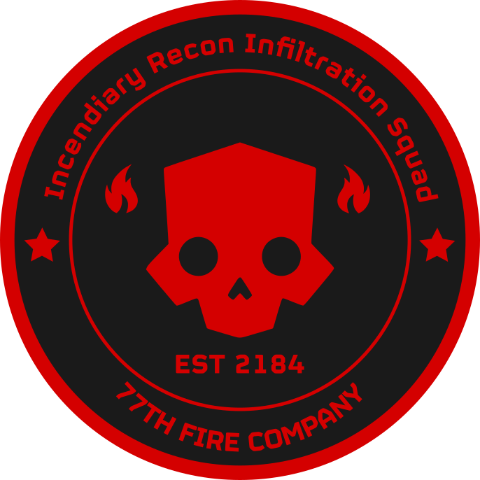

-
Incendiary Recon Infiltration Battalion
The Incendiary Recon infiltration Battalion (I.R.I.S) is a faction soley focused on the idea and function of Incendiary weapons. The mainly sport flammable strategems such as the Flame Thrower, Napalm Eagle Strikes and many more. Their leader is "Astrocricket", the creator of all of this.